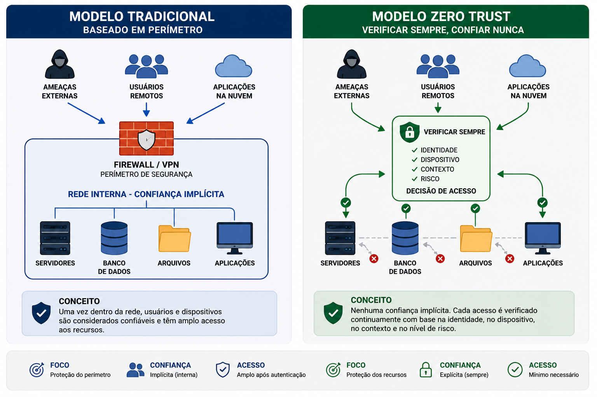
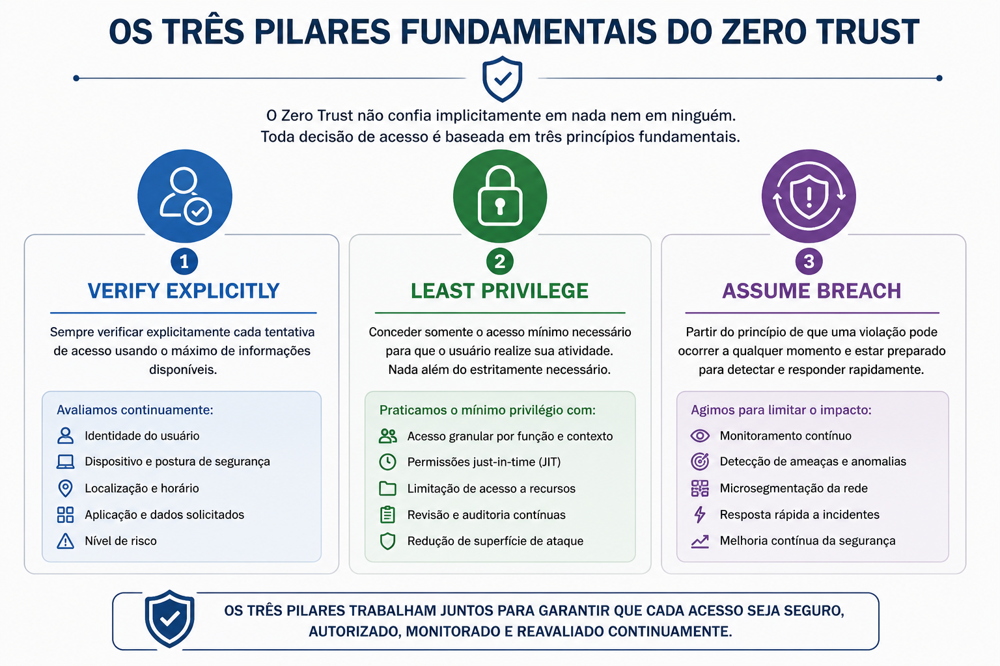
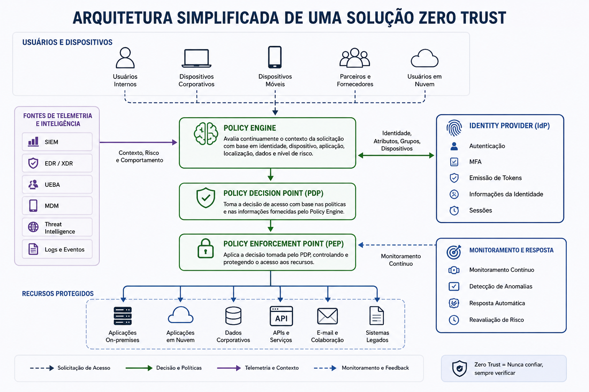
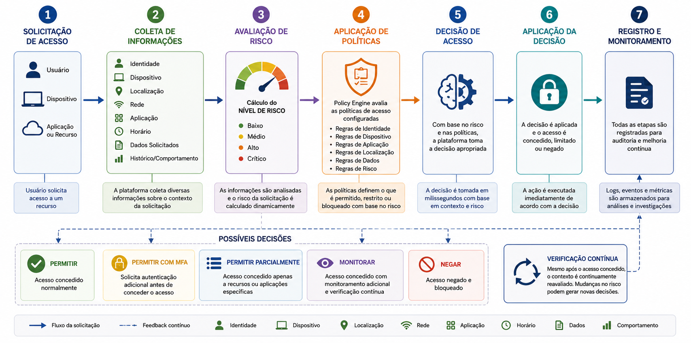
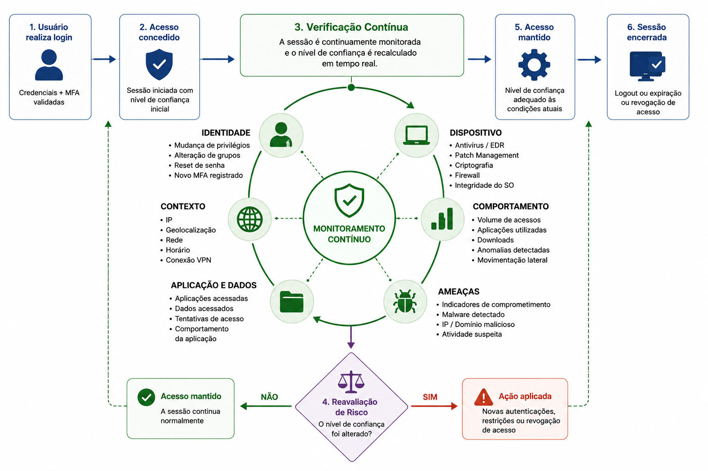
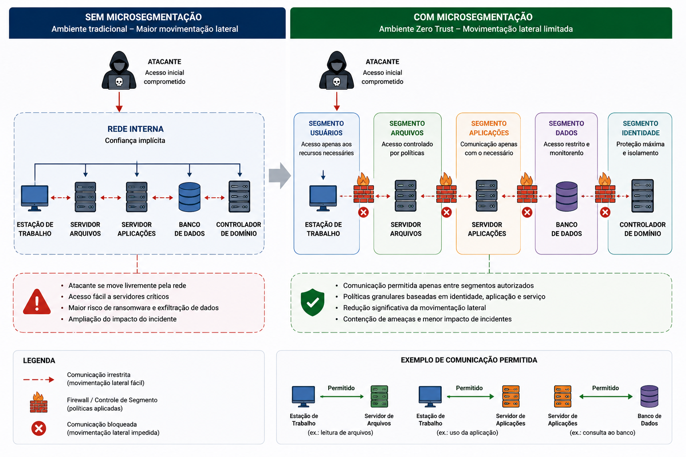
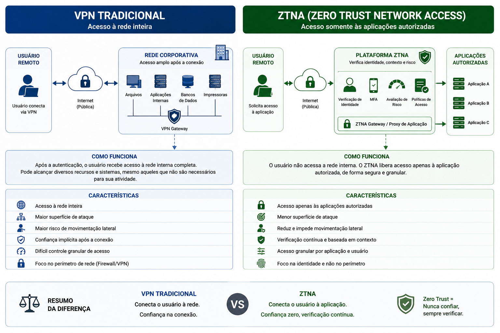
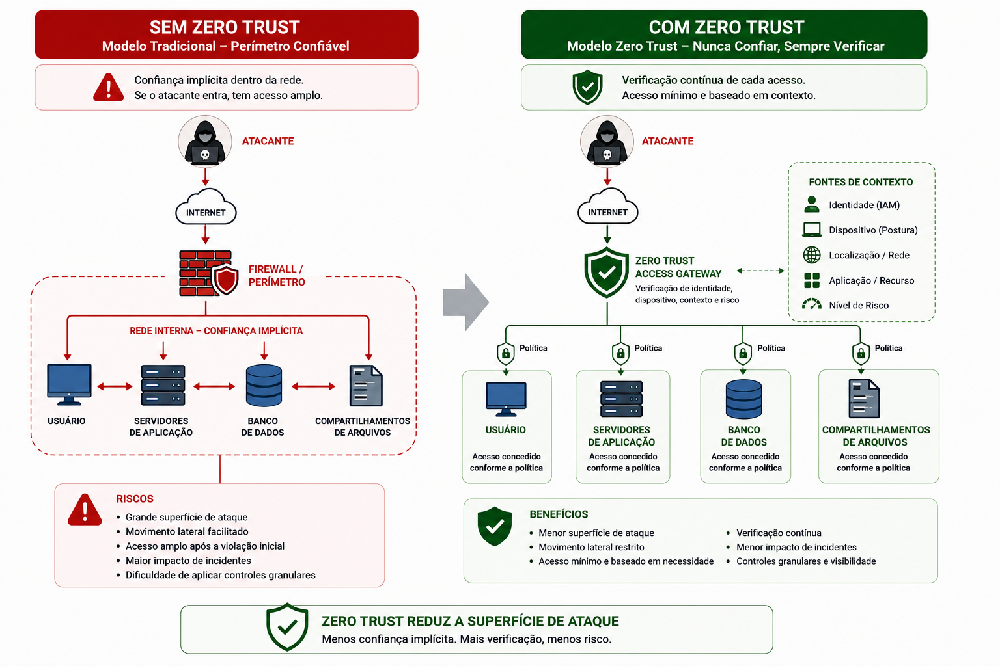
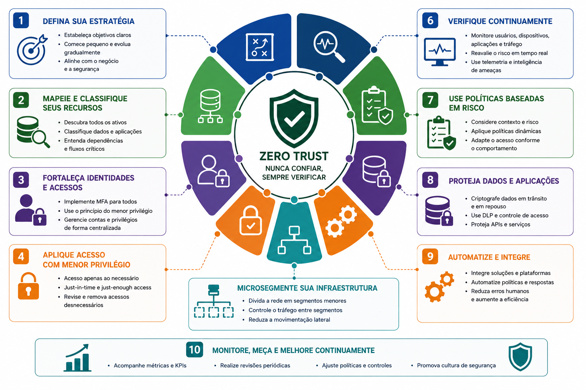
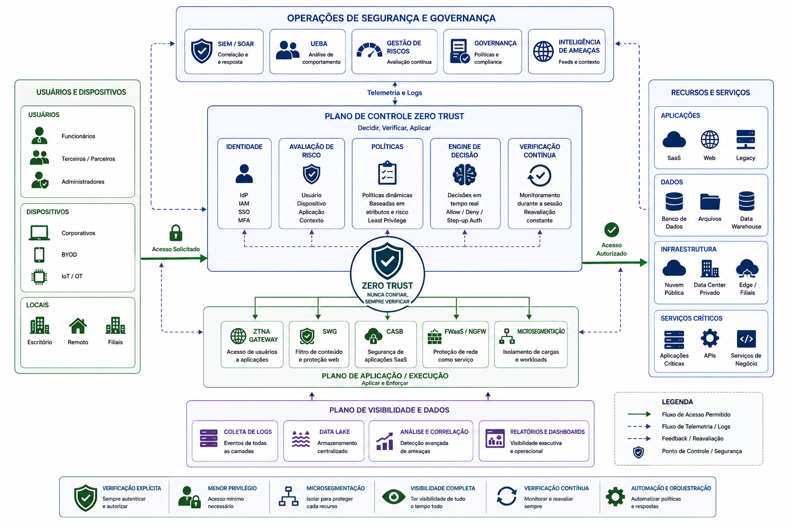

📋 Guia Rápido
Cybersecurity
Fundamentos da Segurança da Informação
☁ Zero Trust
Intermediário / Avançado
Zero Trust
Least Privilege
Continuous Verification
Identity-Centric Security
Conditional Access
Microsegmentação
ZTNA
Device Trust
Policy Engine
Policy Decision Point
Policy Enforcement Point
55 minutos
📖 Resumo Executivo
Durante muitos anos, a segurança das organizações foi construída sobre um modelo baseado em perímetro. Firewalls, VPNs e redes internas eram considerados suficientes para proteger os recursos corporativos. Uma vez dentro da rede, usuários e dispositivos passavam a ser tratados como confiáveis.
A transformação digital modificou completamente esse cenário. Serviços em nuvem, aplicações SaaS, dispositivos móveis, trabalho remoto e identidades distribuídas tornaram insuficiente o modelo tradicional de proteção baseado apenas na localização do usuário.
Nesse contexto surgiu o Zero Trust, um modelo de segurança que parte do princípio de que nenhuma identidade, dispositivo ou aplicação deve ser considerada confiável por padrão, independentemente de sua localização.
Em vez de confiar implicitamente na rede interna, o Zero Trust baseia todas as decisões de acesso em verificações contínuas de identidade, contexto, risco, postura do dispositivo e políticas corporativas.
Never Trust, Always Verify.
Mais do que uma tecnologia, Zero Trust representa uma estratégia de segurança capaz de integrar Identity and Access Management, Autenticação Multifator, Governança de Identidades, Microsegmentação, monitoramento contínuo e análise de risco em um único modelo de proteção.
Compreender os fundamentos do modelo Zero Trust, conhecer seus princípios, componentes arquiteturais, mecanismos de decisão de acesso e entender como esse paradigma substitui o modelo tradicional baseado em perímetro.
☁ O que é Zero Trust?
Zero Trust é um modelo de segurança que elimina o conceito de confiança implícita.
Independentemente de o usuário estar conectado na rede interna, em uma filial, utilizando VPN ou acessando aplicações em nuvem, cada solicitação de acesso deve ser avaliada individualmente.
Essa avaliação considera diversos fatores, incluindo identidade, nível de privilégio, dispositivo utilizado, localização, comportamento observado, horário do acesso e nível de risco calculado pela plataforma de segurança.

Zero Trust não significa "não confiar em ninguém".
Significa que toda solicitação de acesso deve ser validada,
autorizada e monitorada continuamente, independentemente da
origem da conexão.
🌍 A Evolução do Modelo Tradicional
Historicamente, a maioria das organizações concentrou seus esforços de segurança na proteção do perímetro da rede.
Firewalls, IDS, IPS e VPNs atuavam como barreiras responsáveis por impedir acessos externos não autorizados. Após ultrapassar esse perímetro, usuários normalmente recebiam amplo acesso aos recursos internos.
Esse modelo funcionava relativamente bem quando aplicações, usuários e servidores permaneciam dentro do mesmo ambiente corporativo.
Entretanto, a adoção massiva de computação em nuvem, trabalho remoto, dispositivos pessoais (BYOD) e aplicações distribuídas eliminou a noção tradicional de perímetro.
✔ Confiança baseada na rede.
✔ Proteção do perímetro.
✔ VPN.
✔ Firewall como principal defesa.
✔ Confiança baseada em identidade.
✔ Verificação contínua.
✔ Avaliação de risco.
✔ Acesso contextual.
🛡 Os Três Princípios Fundamentais do Zero Trust
Embora o Zero Trust seja composto por diversos controles e tecnologias, sua implementação é baseada em três princípios fundamentais que orientam todas as decisões de acesso.
Esses princípios foram amplamente difundidos por organizações como o NIST e representam a base das arquiteturas modernas de segurança centradas na identidade.
Toda solução Zero Trust procura responder continuamente três perguntas:
- Quem está solicitando o acesso?
- O acesso realmente é necessário?
- E se o ambiente já estiver comprometido?

✔ Verify Explicitly
O primeiro princípio determina que toda solicitação de acesso deve ser validada explicitamente utilizando o maior número possível de informações disponíveis.
Não basta conhecer apenas o usuário. Também é necessário avaliar o dispositivo utilizado, sua postura de segurança, localização, horário, comportamento, sensibilidade do recurso solicitado e outros fatores de risco.
👤 Identidade.
💻 Dispositivo.
📍 Localização.
🕒 Horário.
🌎 Endereço IP.
📱 Tipo de equipamento.
⚠ Nível de risco.
Garantir que toda decisão de acesso seja baseada no contexto completo da solicitação.
Um colaborador realiza login utilizando suas credenciais corretas, porém tenta acessar uma aplicação crítica a partir de um dispositivo desconhecido localizado em outro país. Mesmo com a senha correta, a plataforma poderá solicitar MFA adicional ou bloquear completamente o acesso.
🔒 Least Privilege
O segundo princípio estabelece que toda identidade deve possuir apenas os privilégios estritamente necessários para executar suas atividades.
Esse conceito reduz significativamente a superfície de ataque e limita o impacto causado pelo comprometimento de uma conta.
Em arquiteturas Zero Trust, permissões são concedidas de forma granular e revisadas continuamente para evitar privilégios excessivos.
• RBAC.
• ABAC.
• JIT.
• JEA.
• PAM.
✔ Menor impacto de ataques.
✔ Redução da movimentação lateral.
✔ Melhor governança.
✔ Maior conformidade.
🚨 Assume Breach
O terceiro princípio parte da premissa de que uma invasão pode já ter ocorrido ou poderá ocorrer a qualquer momento.
Em vez de confiar que o ambiente está completamente protegido, a arquitetura Zero Trust procura limitar continuamente o impacto de um eventual comprometimento.
Esse princípio incentiva o monitoramento constante, a microsegmentação da infraestrutura, a análise comportamental e a detecção precoce de atividades suspeitas.
• EDR.
• SIEM.
• UEBA.
• Threat Intelligence.
• Microsegmentação.
✔ Contenção rápida.
✔ Menor movimentação lateral.
✔ Resposta a incidentes.
✔ Redução do impacto.
Assume Breach não significa considerar que todos os sistemas estão comprometidos, mas sim projetar a arquitetura de forma que um comprometimento isolado não permita ao invasor alcançar todo o ambiente corporativo.
🎯 Os Princípios Trabalhando em Conjunto
Os três princípios do Zero Trust não atuam de forma isolada.
Cada decisão de acesso resulta da combinação entre verificação explícita da identidade, concessão do menor privilégio possível e monitoramento contínuo considerando que qualquer recurso poderá ser alvo de comprometimento.
• Quem está acessando?
• De onde?
• Com qual dispositivo?
• Qual o risco?
• Qual acesso é realmente necessário?
• Por quanto tempo?
• Quais recursos?
• Como limitar o impacto?
• Como detectar rapidamente?
• Como conter o incidente?
O maior diferencial do Zero Trust não está em uma tecnologia específica, mas na mudança de paradigma. Em vez de confiar na localização do usuário ou no perímetro da rede, todas as decisões passam a considerar identidade, contexto, risco e comportamento em tempo real. Essa abordagem torna o modelo muito mais adequado para ambientes híbridos, serviços em nuvem e organizações com força de trabalho distribuída.
🏗 Arquitetura Zero Trust
O Zero Trust não é um produto, mas um modelo arquitetural composto por diversos componentes que trabalham de forma integrada para avaliar continuamente cada solicitação de acesso.
Em vez de permitir conexões baseadas apenas na autenticação inicial do usuário, a arquitetura Zero Trust utiliza informações de identidade, dispositivos, telemetria, comportamento, classificação de risco e políticas corporativas para decidir se um acesso deverá ser concedido, limitado ou bloqueado.
Embora diferentes fabricantes utilizem implementações próprias, os principais componentes permanecem praticamente os mesmos em todas as arquiteturas modernas.

👤 Identity Provider (IdP)
O Identity Provider continua sendo um dos principais elementos de uma arquitetura Zero Trust.
Sua responsabilidade é autenticar usuários, emitir tokens de identidade, aplicar Autenticação Multifator e disponibilizar as informações necessárias para que outros componentes possam tomar decisões de acesso.
Além da autenticação inicial, o IdP também fornece atributos como grupos, papéis, departamentos, nível de privilégio e demais informações utilizadas durante a avaliação das políticas de segurança.
✔ Autenticação.
✔ MFA.
✔ Emissão de Tokens.
✔ Informações da identidade.
✔ Sessões.
• Microsoft Entra ID.
• Okta.
• Keycloak.
• Google Cloud Identity.
• Ping Identity.
🧠 Policy Engine (PE)
O Policy Engine representa o cérebro da arquitetura Zero Trust.
É nesse componente que as políticas de segurança são avaliadas, considerando identidade, contexto, nível de risco, localização, dispositivo utilizado e demais atributos relacionados à solicitação de acesso.
Com base nessas informações, o mecanismo determina qual deverá ser a decisão aplicada ao usuário.
• Identidade.
• Dispositivo.
• Localização.
• Aplicação.
• Classificação do recurso.
• Nível de risco.
✔ Permitir.
✔ Negar.
✔ Solicitar MFA.
✔ Acesso limitado.
✔ Sessão monitorada.
O Policy Engine não executa diretamente as políticas. Sua função é analisar as informações disponíveis e determinar qual decisão deverá ser aplicada para cada solicitação de acesso.
⚖ Policy Decision Point (PDP)
O Policy Decision Point (PDP) recebe as informações fornecidas pelo Policy Engine e formaliza a decisão que será enviada ao componente responsável por aplicá-la.
Essa decisão pode envolver autorização completa, restrições parciais, solicitação de autenticação adicional ou bloqueio da conexão.
• Políticas.
• Identidade.
• Dispositivo.
• Risco.
• Telemetria.
• Permitir.
• Negar.
• Exigir MFA.
• Acesso temporário.
• Bloqueio imediato.
🚪 Policy Enforcement Point (PEP)
O Policy Enforcement Point (PEP) é o componente responsável por aplicar efetivamente a decisão tomada pelo Policy Decision Point.
Dependendo da arquitetura utilizada, o PEP pode estar presente em gateways, proxies reversos, soluções ZTNA, firewalls, APIs, aplicações corporativas ou serviços em nuvem.
• ZTNA.
• Proxy.
• Firewall.
• API Gateway.
• Aplicações.
• Cloud.
✔ Aplicar políticas.
✔ Liberar acesso.
✔ Bloquear conexões.
✔ Solicitar reautenticação.
📊 Telemetria e Inteligência
As decisões de uma arquitetura Zero Trust não dependem apenas da identidade do usuário.
Diversas fontes de telemetria fornecem informações que ajudam a calcular continuamente o nível de risco associado a cada sessão.
• EDR.
• SIEM.
• UEBA.
• Threat Intelligence.
• MDM.
• Logs de autenticação.
✔ Detectar anomalias.
✔ Calcular risco.
✔ Monitorar sessões.
✔ Atualizar decisões.
Sempre que uma dessas fontes identificar alterações relevantes, como um dispositivo comprometido, comportamento suspeito ou mudança de localização, uma nova avaliação poderá ser realizada, mesmo durante uma sessão já estabelecida.
Uma arquitetura Zero Trust moderna funciona como um sistema vivo. A decisão de acesso não acontece apenas no momento do login. Durante toda a sessão, informações provenientes de ferramentas como SIEM, EDR, MDM, Threat Intelligence e análise comportamental alimentam continuamente o mecanismo de decisão. Caso o risco aumente, o acesso pode ser restringido, exigir uma nova autenticação ou ser encerrado imediatamente, sem depender de intervenção manual.
⚖ Processo de Decisão de Acesso
Uma das maiores diferenças entre o modelo tradicional de segurança e o Zero Trust está na forma como o acesso é concedido.
Enquanto arquiteturas tradicionais normalmente tomam a decisão apenas durante o login inicial, o Zero Trust reavalia constantemente cada solicitação de acesso considerando diversas informações contextuais.
Isso significa que duas solicitações realizadas pelo mesmo usuário podem receber decisões diferentes caso o contexto tenha sido alterado.

👤 A Identidade é Apenas o Início
Confirmar a identidade do usuário continua sendo uma etapa fundamental, porém ela representa apenas um dos elementos avaliados durante a decisão de acesso.
Mesmo após uma autenticação bem-sucedida, a plataforma Zero Trust continua analisando diversos fatores antes de conceder acesso aos recursos solicitados.
• Usuário.
• Cargo.
• Departamento.
• Grupos.
• Papéis.
• Privilégios.
Quem está tentando acessar o recurso?
💻 Avaliação do Dispositivo
O dispositivo utilizado também influencia diretamente a decisão de acesso.
Antes de permitir a conexão, a arquitetura verifica se o equipamento atende aos requisitos mínimos de segurança definidos pela organização.
• Sistema operacional.
• Antivírus.
• EDR.
• Criptografia.
• Firewall.
• Correções instaladas.
✔ Dispositivo confiável.
✔ Acesso restrito.
✔ MFA adicional.
✔ Bloqueio da conexão.
Um colaborador utiliza suas credenciais corretas, porém tenta acessar uma aplicação corporativa a partir de um notebook sem antivírus atualizado. A plataforma poderá permitir acesso apenas a recursos de baixo risco ou bloquear completamente a conexão até que o dispositivo esteja em conformidade.
📍 Contexto e Nível de Risco
Além da identidade e do dispositivo, o Zero Trust avalia o contexto em que a solicitação ocorre.
Essas informações permitem calcular dinamicamente o nível de risco associado à sessão e ajustar automaticamente a política de acesso.
• Localização.
• Horário.
• Rede utilizada.
• Geolocalização.
• Endereço IP.
• Padrão de uso.
• Histórico.
• Anomalias.
• Velocidade de acesso.
• Mudança de país.
• Baixo risco.
• Médio risco.
• Alto risco.
• Crítico.
🛡 Decisões Possíveis
Após analisar todas as informações disponíveis, a arquitetura Zero Trust determina qual será a resposta para aquela tentativa de acesso.
A decisão não precisa ser simplesmente permitir ou negar. Em muitos casos, o acesso pode ser concedido de maneira parcial ou condicionada ao cumprimento de requisitos adicionais.
O usuário recebe acesso normalmente.
Exige uma autenticação adicional antes da liberação.
Libera apenas aplicações ou recursos específicos.
Mantém a sessão sob observação reforçada.
Bloqueia completamente a tentativa de acesso.
🔄 Conditional Access
Uma das implementações mais conhecidas desse processo de decisão é o Conditional Access.
Nesse modelo, políticas são aplicadas dinamicamente conforme o contexto apresentado pela solicitação de acesso.
Assim, dois usuários pertencentes ao mesmo grupo podem receber tratamentos diferentes caso utilizem dispositivos distintos, estejam localizados em regiões diferentes ou apresentem níveis de risco diferentes.
• Exigir MFA.
• Bloquear países.
• Permitir apenas dispositivos corporativos.
• Restringir horários.
• Solicitar nova autenticação.
✔ Segurança dinâmica.
✔ Menor impacto para o usuário.
✔ Redução de riscos.
✔ Melhor experiência.
No modelo Zero Trust, a decisão de acesso deixa de ser um evento pontual e passa a ser um processo contínuo. A identidade do usuário continua importante, mas ela é apenas um dos diversos elementos considerados pelo mecanismo de decisão. Essa abordagem permite equilibrar segurança e produtividade, concedendo acesso somente quando o contexto apresentado demonstra um nível de risco aceitável.
🔄 Continuous Verification
Um dos conceitos mais importantes do Zero Trust é a Verificação Contínua (Continuous Verification).
Nos modelos tradicionais, a autenticação normalmente ocorre apenas no início da sessão. Após o login, o usuário permanece autenticado até efetuar logout ou até que sua sessão expire.
No Zero Trust essa lógica muda completamente. A plataforma continua avaliando continuamente o nível de confiança daquela sessão durante todo o período de utilização dos recursos.
Caso alguma informação relevante seja alterada, uma nova decisão de acesso poderá ser tomada imediatamente.

📊 O Que é Monitorado?
Durante toda a sessão, diferentes componentes da arquitetura coletam informações que ajudam a calcular continuamente o nível de risco da identidade.
Essa análise acontece de forma transparente para o usuário e permite que decisões sejam adaptadas conforme mudanças no contexto operacional.
• Mudança de privilégios.
• Alteração de grupos.
• Reset de senha.
• Novo MFA registrado.
• Antivírus.
• EDR.
• Patch Management.
• Criptografia.
• Firewall.
• IP.
• Geolocalização.
• Rede.
• Horário.
• VPN.
• Volume de acessos.
• Aplicações utilizadas.
• Downloads.
• Anomalias.
• Movimentação lateral.
⚠ Quando o Risco Aumenta
Nem toda sessão permanece segura do início ao fim.
Durante sua utilização, diversos fatores podem aumentar o risco associado ao usuário ou ao dispositivo, exigindo uma nova avaliação da política de acesso.
• Novo país.
• Novo dispositivo.
• Malware detectado.
• IP suspeito.
• Comportamento anômalo.
• Solicitar MFA.
• Revogar sessão.
• Bloquear dispositivo.
• Reduzir permissões.
• Encerrar acesso.
Um usuário inicia normalmente sua sessão utilizando um notebook corporativo. Durante o expediente, o EDR identifica um malware no equipamento. Automaticamente a arquitetura Zero Trust reduz o nível de confiança daquela sessão e encerra o acesso às aplicações críticas até que o incidente seja resolvido.
🔁 Reautenticação Inteligente
A Verificação Contínua não significa solicitar senha ou MFA a cada poucos minutos.
Em vez disso, a plataforma determina quando uma nova autenticação realmente é necessária, equilibrando segurança e experiência do usuário.
• Mudança de localização.
• Novo navegador.
• Dispositivo desconhecido.
• Aplicação crítica.
• Elevação de privilégios.
✔ Melhor experiência.
✔ Menos interrupções.
✔ Segurança contextual.
✔ Menor risco.
📡 Integração com SIEM, EDR e UEBA
A Verificação Contínua depende da integração entre diversas ferramentas responsáveis por fornecer informações sobre o estado da infraestrutura.
Enquanto o SIEM centraliza eventos de segurança, o EDR monitora os dispositivos e o UEBA identifica comportamentos anômalos dos usuários.
• Correlação de eventos.
• Logs.
• Alertas.
• Malware.
• Processos.
• Ameaças.
• Resposta automática.
• Análise comportamental.
• Machine Learning.
• Detecção de desvios.
• Indicadores.
• Reputação.
• Campanhas.
• IOC.
🎯 Benefícios da Verificação Contínua
Ao substituir decisões estáticas por avaliações permanentes, o Zero Trust reduz significativamente o tempo necessário para identificar mudanças no nível de risco e responder a incidentes.
✔ Menor tempo de exposição.
✔ Revogação imediata.
✔ Menor movimentação lateral.
✔ Contenção automática.
✔ Decisões dinâmicas.
✔ Melhor experiência.
✔ Automatização.
✔ Maior visibilidade.
A Verificação Contínua é um dos elementos que diferencia o Zero Trust das arquiteturas tradicionais. Em vez de considerar a autenticação como um evento único, o modelo trata a confiança como uma variável dinâmica, recalculada continuamente conforme o estado da identidade, do dispositivo e do ambiente. Isso permite que uma sessão inicialmente legítima seja restringida ou encerrada caso o nível de risco aumente durante sua utilização.
🧩 Microsegmentação
Um dos pilares técnicos mais importantes do Zero Trust é a Microsegmentação.
Enquanto os modelos tradicionais dividem a infraestrutura em grandes segmentos de rede, a microsegmentação cria pequenas zonas de segurança independentes, controlando rigorosamente a comunicação entre aplicações, servidores, dispositivos e usuários.
Essa abordagem reduz significativamente a movimentação lateral de atacantes dentro do ambiente corporativo.

🌐 Do Perímetro para os Recursos
Tradicionalmente, a proteção era concentrada na borda da rede.
Após ultrapassar o firewall corporativo, grande parte dos servidores permanecia acessível aos usuários internos.
No Zero Trust, cada recurso passa a possuir sua própria política de segurança, independentemente de sua localização física ou lógica.
• Firewall.
• VPN.
• Segmentação por VLAN.
• Confiança na rede interna.
• Proteção por aplicação.
• Proteção por workload.
• Políticas individuais.
• Autorização contínua.
➡ Tráfego Norte-Sul e Leste-Oeste
A Microsegmentação protege tanto o tráfego que entra ou sai da organização quanto a comunicação entre recursos internos.
Essa distinção é importante porque muitos ataques modernos não se limitam ao acesso inicial. Após comprometer um equipamento, o invasor normalmente tenta movimentar-se lateralmente em busca de servidores mais sensíveis.
• Internet.
• VPN.
• Clientes.
• Parceiros.
• Cloud.
• Servidor → Servidor.
• Aplicação → Banco.
• Container → Container.
• Workload → Workload.
Grande parte dos ataques de ransomware explora justamente o tráfego Leste-Oeste para comprometer outros servidores após a invasão inicial.
🛡 Como a Microsegmentação Funciona
Cada aplicação, servidor ou serviço passa a possuir políticas próprias de comunicação.
Em vez de permitir acesso irrestrito entre todos os equipamentos de uma rede, somente comunicações previamente autorizadas são estabelecidas.
• Identidade.
• Aplicação.
• Workload.
• Serviço.
• Porta.
• Protocolo.
✔ Permitir.
✔ Bloquear.
✔ Limitar.
✔ Registrar.
✔ Monitorar.
🏢 Tecnologias Utilizadas
A implementação da Microsegmentação pode utilizar diferentes tecnologias, dependendo da infraestrutura existente.
• VLANs.
• ACLs.
• Firewalls internos.
• SDN.
• AWS Security Groups.
• Azure NSG.
• Google Cloud Firewall.
• Kubernetes Network Policies.
• Service Mesh.
• Istio.
• Calico.
• ZTNA.
• Identity Policies.
• Application Proxy.
🎯 Benefícios da Microsegmentação
Ao limitar rigorosamente a comunicação entre recursos, a Microsegmentação reduz significativamente o impacto de um comprometimento inicial.
Mesmo que um atacante consiga invadir um servidor, suas possibilidades de alcançar outros sistemas permanecem bastante restritas.
✔ Menor movimentação lateral.
✔ Contenção de ataques.
✔ Menor superfície de ataque.
✔ Isolamento de workloads.
✔ Melhor visibilidade.
✔ Políticas granulares.
✔ Auditoria.
✔ Conformidade.
Durante muitos anos acreditou-se que proteger o perímetro da rede era suficiente. O Zero Trust inverte essa lógica: cada recurso se torna um novo perímetro de segurança. A Microsegmentação é o mecanismo que transforma esse conceito em realidade, reduzindo a movimentação lateral, protegendo aplicações críticas e limitando o impacto de ataques como ransomware e comprometimento de contas privilegiadas.
🌐 Zero Trust Network Access (ZTNA)
Durante muitos anos, a VPN foi a principal tecnologia utilizada para fornecer acesso remoto aos recursos corporativos.
Embora continue sendo amplamente utilizada, a VPN tradicional foi projetada para um cenário em que usuários acessavam uma rede corporativa claramente definida e protegida por um perímetro.
O Zero Trust Network Access (ZTNA) substitui essa abordagem, concedendo acesso diretamente às aplicações autorizadas, sem expor toda a rede interna ao usuário.

🏛 Como Funciona o ZTNA
Em uma arquitetura ZTNA, o usuário não estabelece uma conexão direta com toda a rede corporativa.
Primeiramente, sua identidade é validada pelo Identity Provider. Em seguida, as políticas do Zero Trust analisam o contexto da solicitação, verificam o nível de risco e determinam quais aplicações poderão ser acessadas.
Somente após essa avaliação o acesso é estabelecido, normalmente por meio de um proxy seguro ou gateway de aplicação.
• Usuário.
• Autenticação.
• MFA.
• Policy Engine.
• ZTNA Gateway.
• Aplicação.
✔ Sem acesso direto à rede.
✔ Acesso por aplicação.
✔ Políticas dinâmicas.
✔ Verificação contínua.
⚖ VPN Tradicional × ZTNA
Embora ambas permitam acesso remoto, VPN e ZTNA seguem modelos de segurança completamente diferentes.
Na VPN, o usuário normalmente recebe conectividade com parte da rede interna. Já no ZTNA, o acesso é concedido apenas às aplicações autorizadas, reduzindo significativamente a superfície de ataque.
• Acesso à rede.
• Confiança após conexão.
• Maior movimentação lateral.
• Dependência do perímetro.
• Acesso por aplicação.
• Validação contínua.
• Menor superfície de ataque.
• Segurança baseada em identidade.
Um analista financeiro necessita acessar apenas o sistema ERP da empresa. Em uma VPN tradicional ele pode obter conectividade com diversos segmentos da rede. Em uma arquitetura ZTNA, somente a aplicação ERP é disponibilizada, permanecendo invisíveis todos os demais recursos corporativos.
🛡 Benefícios do ZTNA
Ao limitar o acesso apenas aos recursos necessários, o Zero Trust Network Access reduz significativamente o impacto de credenciais comprometidas e dificulta a movimentação lateral dentro da infraestrutura.
✔ Menor superfície de ataque.
✔ Aplicações invisíveis.
✔ Menor movimentação lateral.
✔ Políticas contextuais.
✔ Melhor experiência.
✔ Escalabilidade.
✔ Acesso simplificado.
✔ Administração centralizada.
☁ ZTNA em Ambientes Modernos
O crescimento da computação em nuvem tornou o ZTNA um dos principais componentes das arquiteturas modernas de segurança.
Como aplicações passaram a estar distribuídas entre data centers, provedores de nuvem e ambientes SaaS, proteger apenas o perímetro da rede deixou de ser suficiente.
Nesse cenário, o acesso baseado em identidade torna-se muito mais adequado do que a simples conectividade de rede oferecida pelas VPNs tradicionais.
• Microsoft Entra ID.
• AWS.
• Azure.
• Google Cloud.
• SaaS.
• Aplicações Web.
• Identity Provider.
• MFA.
• Conditional Access.
• Policy Engine.
• ZTNA Gateway.
O ZTNA não substitui apenas a VPN. Ele representa uma mudança de paradigma na forma como o acesso remoto é concedido. Em vez de conectar usuários à rede corporativa, conecta identidades apenas às aplicações autorizadas, utilizando políticas dinâmicas, avaliação contínua de risco e autenticação forte. Essa abordagem está alinhada aos princípios do Zero Trust e reduz consideravelmente a exposição dos ambientes corporativos.
🚨 Principais Ameaças Mitigadas pelo Zero Trust
Nenhuma arquitetura de segurança elimina completamente os riscos. Entretanto, o modelo Zero Trust reduz significativamente a probabilidade de sucesso de diversos ataques modernos ao limitar privilégios, validar continuamente identidades e restringir a movimentação lateral dos invasores.
Ao combinar Identity and Access Management, Autenticação Multifator, Conditional Access, Microsegmentação e monitoramento contínuo, o Zero Trust cria múltiplas camadas de proteção que dificultam a progressão de um ataque.

⚠ Ameaças Mais Comuns
Embora existam inúmeras técnicas utilizadas por atacantes, algumas ameaças são particularmente impactadas pela adoção do modelo Zero Trust.
Mesmo com usuário e senha válidos, o acesso continua dependendo do contexto, do dispositivo e do nível de risco.
A Microsegmentação dificulta a propagação entre servidores e estações de trabalho.
O atacante encontra barreiras adicionais entre aplicações e segmentos da infraestrutura.
Privilégios mínimos e monitoramento reduzem riscos internos.
Aplicações não autorizadas tornam-se mais fáceis de identificar e controlar.
MFA, Passkeys e Conditional Access reduzem significativamente o impacto das credenciais roubadas.
✔ Boas Práticas para Implementação do Zero Trust
A adoção do Zero Trust não ocorre por meio da instalação de um único produto. Trata-se de uma estratégia contínua de evolução da arquitetura de segurança.
Organizações maduras normalmente implementam o Zero Trust de forma gradual, priorizando identidades, aplicações críticas e dados mais sensíveis.

• Implementar Identity and Access Management (IAM).
• Exigir MFA para todos os usuários.
• Aplicar o Princípio do Menor Privilégio.
• Utilizar Conditional Access baseado em risco.
• Adotar Microsegmentação.
• Implementar Zero Trust Network Access (ZTNA).
• Monitorar continuamente usuários e dispositivos.
• Integrar SIEM, EDR e Threat Intelligence.
• Revisar privilégios periodicamente.
• Automatizar respostas a incidentes sempre que possível.
🏢 Arquitetura Corporativa Zero Trust
Em ambientes corporativos modernos, o Zero Trust integra diversas soluções responsáveis por proteger identidades, dispositivos, aplicações, redes e dados.
Em vez de depender exclusivamente de firewalls ou VPNs, todas as decisões passam a considerar informações provenientes de plataformas especializadas em identidade, monitoramento e proteção de endpoints.

• IAM.
• MFA.
• ZTNA.
• Policy Engine.
• Conditional Access.
• SIEM.
• EDR.
• Threat Intelligence.
✔ Segurança baseada em identidade.
✔ Menor superfície de ataque.
✔ Decisões dinâmicas.
✔ Monitoramento contínuo.
✔ Maior resiliência.
📚 O que aprendemos?
- O conceito de Zero Trust e sua evolução em relação ao modelo tradicional.
- Os três princípios fundamentais: Verify Explicitly, Least Privilege e Assume Breach.
- Os principais componentes de uma arquitetura Zero Trust.
- Como ocorre a decisão de acesso baseada em risco.
- O conceito de Verificação Contínua.
- A importância da Microsegmentação.
- O funcionamento do Zero Trust Network Access (ZTNA).
- As principais ameaças mitigadas pelo Zero Trust.
- As boas práticas para implementação em ambientes corporativos.
- Como integrar identidade, dispositivos e monitoramento em uma arquitetura moderna de segurança.
🚀 Próximo Capítulo
Ao longo deste capítulo estudamos como o Zero Trust transforma a forma de proteger usuários, dispositivos, aplicações e dados por meio da verificação contínua e da eliminação da confiança implícita.
Entretanto, existe um grupo de identidades que exige controles ainda mais rigorosos devido ao seu elevado nível de privilégio.
Como proteger contas administrativas, credenciais privilegiadas, acessos temporários e sessões críticas utilizadas por equipes de infraestrutura e segurança?
No próximo capítulo conheceremos o Privileged Access Management (PAM), explorando cofres de credenciais, gerenciamento de sessões privilegiadas, acessos Just-In-Time (JIT), Just Enough Administration (JEA) e monitoramento de atividades administrativas.
➡ Ler o próximo capítulo
✅ 🔺 Tríade CIA
✅ 🔒 Confidencialidade
✅ 🛡 Integridade
✅ ⚡ Disponibilidade
✅ 🔐 Criptografia
✅ 👥 Controle de Acesso
✅ 🆔 Autenticação
✅ ✔ Autorização
✅ 🔑 Autenticação Multifator (MFA)
✅ 🏛 Identity and Access Management (IAM)
✅ ☁ Zero Trust
➡ 🔐 Privileged Access Management (PAM)
⬜ 🌐 Active Directory e Microsoft Entra ID